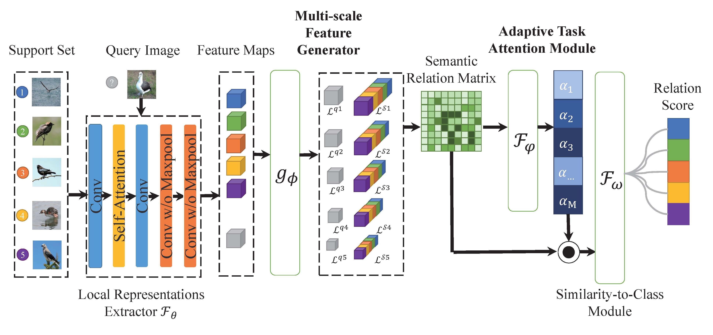
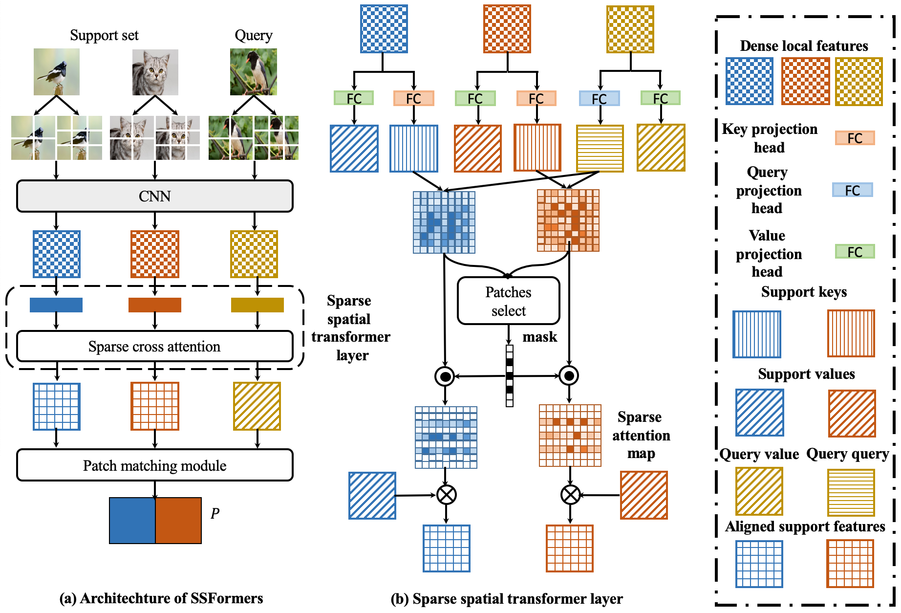

|
Haoxing Chen
(陈昊星)
|
Biography
Currently, I am a master student of Nanjing University and a member of Machine Learning and Intelligent Decision Group , led by professor Chunlin Chen. I received my B.Sc. degree in School of Instrument Science and Engineering in June 2020 from South East University, SEU.
Preprints
-
Haoxing Chen , Huaxiong Li, Yaohui Li, Chunlin Chen.
Multi-scale Adaptive Task Attention Network for Few-Shot Learning.
arXiv preprint arXiv:2011.14479 , 2020.
[Paper] [Code] -
Haoxing Chen , Huaxiong Li, Yaohui Li, Chunlin Chen.
Diversity Helps: Unsupervised Few-shot Learning via Distribution Shift-based Data Augmentation.
arXiv preprint arXiv:1911.06968 , 2019.
[ Paper ] [ Code ] -
Yaohui Li , Huaxiong Li, Haoxing Chen, Chunlin Chen.
Hierarchical Representation based Query-Specific Prototypical Network for Few-Shot Image Classification.
arXiv preprint arXiv: 2103.11384 , 2021.
-
Haoxing Chen , Huaxiong Li, Yaohui Li, Chunlin Chen.
Sparse Spatial Transformers for Few-Shot Learning.
arXiv preprint arXiv: 2109.12932 , 2021.
[PDF]
|
 |
|

|
|

|
|
|
 |
|
Publications
-
Yaohui Li , Huaxiong Li, Haoxing Chen, Chunlin Chen.
Local Mutual Metric Network for Few-Shot Image Classification.
In Proceedings of the 4th Chinese Conference on Pattern Recognition and Computer Vision(PRCV) , 2021.
[PDF]

|
|
Awards
- 2018, First Prize of Jiangsu Province in the National Mathematical Modelling Competition.
- 2018, Second Prize of Jiangsu Province in the 4th Virtual Instrument Competition.
- 2018, National Special Award of the 8th Education Robot Competition Of China (ERCC).
- 2019, Meritorious Prize in the Mathematical Contest In Modeling (MCM).